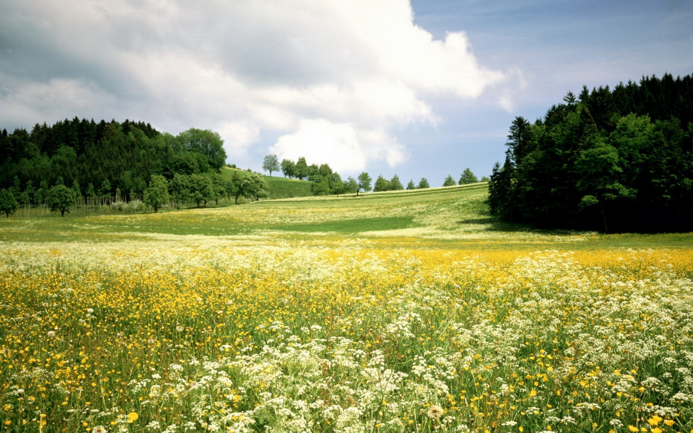

| ‹ | › | |||||
| Пн | Вт | Ср | Чт | Пт | Сб | Вс |
В перший місяць 2019 року віруючі відзначатимуть відразу 3 великих церковних свята:
7 січня - Різдво Христове. Як зрозуміло з назви, цього дня Діва Марія народила Ісуса Христа.
14 січня - Обрізання Господнє. На 8-й день після появи на світло Христос був названий Ісусом і прийняв обрізання. Свято збігається з днем пам'яті Святого Василя Великого. Саме тому частіше 14 січня називають Василів день.
19 січня - Хрещення Господнє. У цей день святкують хрещення Христа в річці Йордан Іоанном Хрестителем. В ніч з 18 на 19 січня необхідно набирати воду, причому не важливо - з крана, колодязя, річки, вважається, що вона стає святою. Під ранок прийнято молитися про виконання найпотаємніших бажань, які обов'язково повинні збутися.
15 лютого - Стрітення Господнє. На 40-й день після народження Ісуса Христа принесли в Храм на посвяту Богові, відповідно до закону Моїсеєва. Не забули Марія і Йосип принести і жертву в знак подяки - стала пара голубиних пташенят
У квітні відзначається три великих свята:
7 квітня - Благовіщення Пресвятої Богородиці. Приводом для святкування є повідомлення архангела Гавриїла Діві Марії про майбутнє народження Ісуса Христа. Віруючим в це свято грішно працювати, оскільки в народі кажуть: «Птах гнізда не в'є, дівчина коси не плете».
21 квітня - Вхід Господній в Єрусалим, відомий також як Вербна (Пальмова) неділя. Відзначають в неділю напередодні Великодня. Необхідно висвітлювати в церкві вербові гілки. Якщо погода холодна, то заготовляли гілочки заздалегідь, ставили їх у воду, щоб до свята нирки розпустилися .
28 квітня - Пасха Христова або Світле Христове Воскресіння. Самий великий православне свято. Проголошений на честь Воскресіння Ісуса Христа. Щороку дата змінюється, т. К. Обчислюється вона за місячно-сонячним календарем (але, як правило, припадає на період з 4 квітня по 8 травня). Саме Великоднем знаменується закінчення Великого посту, тому можна вдосталь їсти їжу, яка була заборонена протягом 48 днів. Головним частуванням столу і символом свята, звичайно ж, є крашанки і паски.
Православний календар червня 2019 складається з двох свят:
6 червня - Вознесіння Господнє. Відзначається в четвер, на 40-й день після Великодня. Ознаменований сходженням на небо Ісуса Христа.
16 червня - День Святої Трійці. Свято має кілька назв, в тому числі Тиждень святої П'ятидесятниці, Духів день. Вважається одним з головних релігійних свят, який прославляє Пресвяту Трійцю. Відзначають в 50-й день після Світлого Христового Воскресіння.

Православні відзначать 2 свята в липні:
7 липня - Різдво Іоанна Хрестителя. Встановлений на честь появи на світ у праведних Захарії і Єлисавети в літньому віці сина, який в майбутньому став відомий як Іоанн Хреститель.
12 липня - Святих первоверховних апостолів Петра і Павла / Павлов день / День Петра і Павла. День пам'яті двох зазначених апостолів. Знаменує закінчення Петрового посту.
Останній місяць літа віруючі шанують:
19 серпня - Преображення Господнє. У народі відоме так само як Яблучний Спас або Другий Спас. В Євангеліях цього свята передує явище Божественної величі і слави Христа перед його учнями під час молитви.
28 серпня - Успіння Богородиці. Згадують смерть Божої Матері .
У православних святами першого місяця осені є:
11 вересня - Усікновення глави Іоанна Предтечі. Поминають Іоанна Хрестителя, точніше його мученицьку смерть.
21 вересня - Різдво Пресвятої Богородиці. В цей день в сім'ї праведних Іоакима і Анни народилася Діва Марія.
27 вересня - Воздвиження Хреста Господнього. Урочисте підняття Хреста вгору після його виявлення в землі є основою цього великого свята .
14 жовтня - Покров Пресвятої Богородиці. Під час молебню у Влахернському храмі до віруючих з'явилася Богородиця зі спеціальним покривалом для голови, тим самим захистивши богослужівих.
4 грудня - Введення в храм Пресвятої Богородиці. Мати і батько Богородиці - праведні Іоаким і Анна були бездітними. Просячи під час молитов дитини, вони дали обіцянку, що якщо дитя з'явиться, то вони обов'язково присвятять його Богу. Коли Марії виповнилося 3 роки, батьки в оточенні родичів і знайомих привели її до Єрусалимського храму.
19 грудня - православні християни й греко-католики відзначають День святого Миколая. Святий Миколай – один із найшанованіших святих – чудотворець, заступник бідних, захисник дітей, а також покровитель мандрівників.